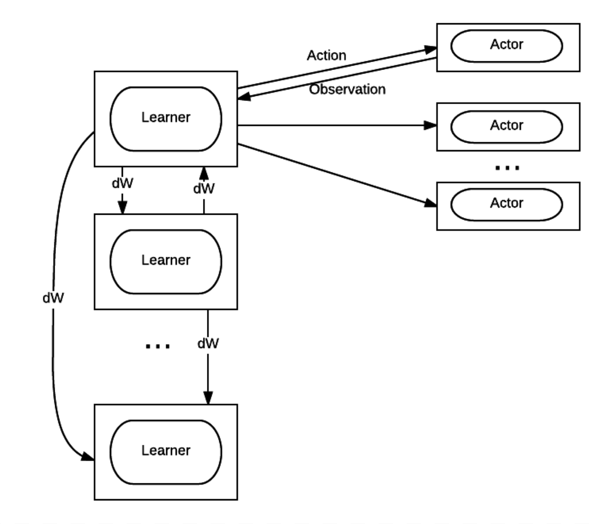

Welcome to VDL’s documentation!¶
This documentation documents how to reproduce the result in the VDL project. The most update-to-date version can be found in the VDL github repository
The final presentation is hosted here. The pdf version can be downloaded from here

{kind=link}
The architecture with multiple learners and multiple actors
This project implements the distributed learning system as shown in the above figure. How to run and benchmark each component and how to run the complete system are documented in the following sections.
Contents:
Files in this project¶
# Main
docs/ # Documentation files in reStructuredText format
universe-starter-agent/ # Virtual distributed learning system, the code is
# modified from https://github.com/openai/universe-starter-agent, which
# provides the baseline learning algorithm.
# Components
learner-actor/ # Experiment code for learner-actor communication
tensorflow_MNIST/ # Experiment code for P2P-multi-learner
# Utility
gym-demo/ # Virtual environnment demos to make sure the dev
# boxs are correctly configured.
benchmark/ # Benchmark code to evaluate the network speed and
# speed of different virtual environments
neonrace/ # Code to run trained neonrace auto-driving model
spread/ # Compiled spread and its python wrapper
# Virtual arm
arm-pose/ # Pose estimation code trained on the virtual arm
# and test on the real arm.
owi-arm/ # Code to control real and the virtual arm